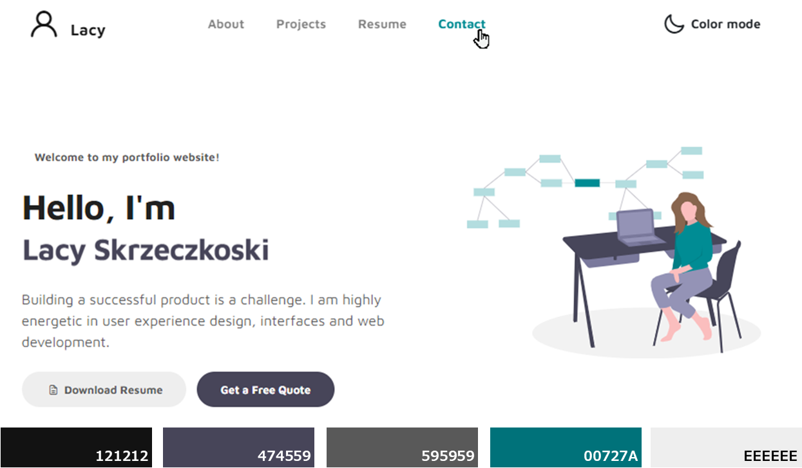
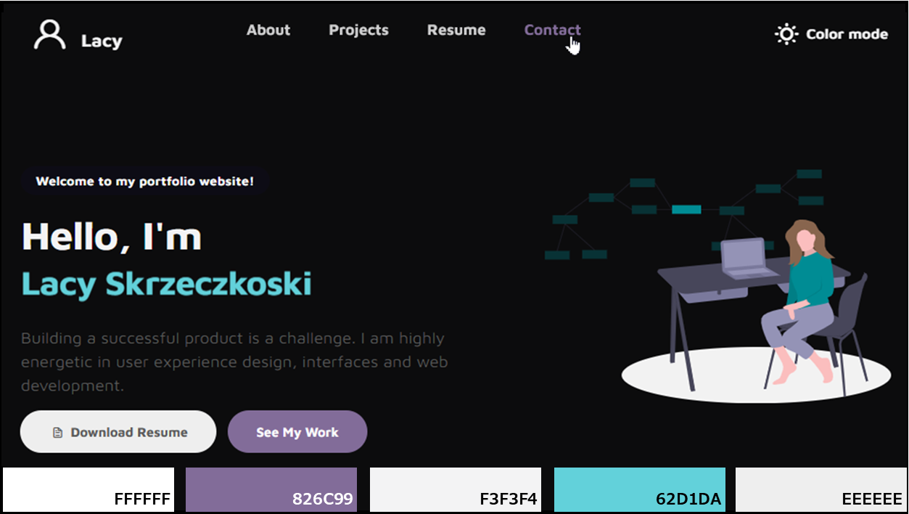

Web Development & Coding Specialization
I am no stranger to self-teaching skills and finding resources to help me along the way. When I decided to learn more about web development after obtaining the IAAP CPACC certification, I came across the Web Development & Coding Specialization at Coursera. I started taking the courses for this specialization starting in October 2020. After just a couple months, I finished all the courses and completed a capstone project which involved creating this portfolio website. This page narrates my design process for this project.
Design Requirements
The criteria for the capstone project were simple.
First, we had to select one of the following web development style options:
- Code from scratch.
- Modify a template.
- Use a development framework.
Second, we had to ensure the structure met the following requirements:
- Use semantic tags.
- Validate using a markup validation service.
- Have at least 4 images on one of the pages.
- Style pages.
- Be a responsive site with unique layouts/looks for each view.
- Include four unique elements beyond what was presented in the course with an emphasis on creativity.
Design Process
I started researching portfolio websites well before I started the capstone project and had a collection of websites that inspired me along with a list of potential features to include in the site. I wanted to create a site that felt uncluttered, prominently displayed my work ethos, highlighted some of my professional attributes, included a couple little personal details, and ultimately be something I could be proud of.
For the capstone project we were required to submit design sketches for peer review. Before I did any coding, I sketched some designs by hand and then tested several different online wireframe tools until I came up with the following prototypes.
Once I had my rough layout, I needed to determine which development style option I would pursue. I weighed the pros and cons of each and considered the time investment each option may require. Since this was my first website design, I decided on a Bootstrap template feeling it would provide a solid foundation to start with but had loads of customization potential. Additionally, I loved the inherent “mobile first” design approach and really wanted to get practical experience trying out designing using the grid system.
I found a template on Tooplate I thought could work well. I first reviewed the code to get a feel for how the styling was designed and then split the content into multiple pages. Next I started minor tweaks to make it feel more like “my” page. I immediately had a good feeling about this template and felt it had a lot of learning potential as I worked through adding my own customization. For example, my real name did not fit in the template animated-item element. Where is this styling located? How is the width determined? What makes the span scroll? How can you make that stop? Is it style only or is there JavaScript involved?
I had so many questions and was eager to break down the code and understand all its intricacies, so I started singling out features using Codepen to get a feel for the interaction between HTML, CSS, and JS and began making my micro-adjustments. At this phase, I documented all changes in a Word document, grabbing screenshots along the way, and notated anything that I needed to research with careful attention paid to accessibility. Some examples of changes I made were the following:
- Updated the home page SVG from Undraw and then edited the colors with Vector Paint.
- Added social links using Font Awesome. Also added aria-label and aria-hidden to social links to enhance screen reader experience of navigation bar links.
- Created color palettes for different themes that meet contrast requirements.
- 
- 
- Changed navigation bar icon using Iconify.
- Added JavaScript to toggle the Light/Dark text and icon for color mode. While implementing this I came across an issue where on page load my color mode icon was inversed. I used the JavaScript debugger and found that jQuery was removing className. To fix this, I added JavaScript to add this class back in.
- Exposed the color mode option in the collapsed navigation which was hidden in the template. Also aligned it with the nav links.
- Added local storage to remember if user had selected Dark or Light color mode.
- Adjusted breakpoints.
- Added JavaScript to push content down when expanding navigation bar.
- Adjusted the carousel to have border shadow style for each image instead of this style being captured as part of the image. Also adjusted the arrows to not overlay the images.
- Changed tags to be semantically correct.
- Added prefers-reduced-motion media query and created simplified animation styling for users who set this preference.
- Added JavaScript for animation control to allow user to stop infinite play. While implementing this, I changed this to a toggle slide but did it incorrectly since it does not validate. This is in my project backlog for a total re-work.
- Added aria-label and aria-hidden to navbar to enhance experience of navigation links for screen reader use to reduce the context redundancy.
- Adjusted semantics and tricky color choices to resolve errors found with axe beta extension.
Learning Experience
One day I was troubleshooting an issue in a knowledge base at work when I came across a pseudo-element and had an AH-HA moment where I was able to bridge work knowledge with web development concepts. These courses gave me the confidence to demonstrate my skills while humbling me to the fact I have much more to learn.
Throughout this project, the following were my favorite things to research and implement:
- CSS layout methods with a mobile-first responsive design approach
- Dark and light mode toggle with a contrast-compliant color palette
- Media queries for animation and adaptations for reducing motion
- Local storage to remember user preferences
- Better document management using Git version control


Site Management
Back during the initial site build and around the time my document of changes grew to a staggering 35+ pages, I found it hard to keep track of my files and changes with my home-baked versioning method. My method was quickly not sustainable maintaining high productivity and my progress stalled. I had to find a better system to managing all this. GitHub was the answer.
As a content architect, I am very familiar with branch versioning. However Git is a whole extra level of versioning I was unaccustomed to. But as I mentioned earlier, I am adept at self-teaching and quickly flattened the learning curve. My preferred setup now is hosting on GitHub Pages, editing using Virtual Studio Code (VS Code) with the Live Server extension for live browser testing, and pulling requests to GitHub from VS Code with the GitHub Pull Requests and Issues extension.
This project site now serves as a tool for further learning and development, and I can’t wait to show you what’s next.